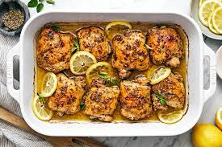

Lemon chicken is really just a simple baked chicken recipe, jazzed up with some punchy ingredients that add lots of flavor without taking away from how super-healthy baked chicken breasts are. Our lemon chicken recipe is fast and easy—a recipe you might turn to on a busy weeknight when you need dinner to be simple as it can be. It’s also a great one to include in your weekend meal-prep (if you do that kind of thing) because one of the many reasons we love lemon chicken breasts is their versatility. Having a container of them in the fridge, all baked and ready to go, means you’ve got the makings of lots of meals! They can anchor a simple and healthy lunch salad, and are delicious sliced up into hearty sandwiches—ones where the bread is slathered with mayo and Homemade Pesto—for dinner, too.